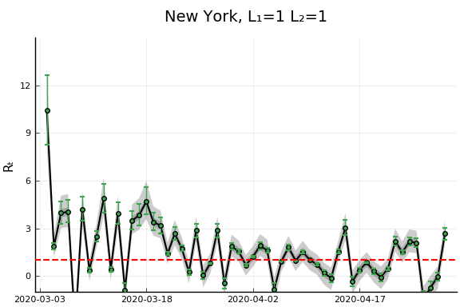

Longer Differences and Smoothing¶
One way to reduce $\sigma_k/\sigma_R$ is to reduce noise in new cases by taking a longer difference or smoothing case counts in some other way. How does this affect the estimation and interpretation of $R_t$?
As in the first section, we start with the approximate recursive relation If we instead look at a longer difference, where $\overline {T_{t,L} e^{\gamma(R_{t,L} - 1)}}$ is some intermediate value in between the minimum and maximum of the ${ \frac{\tau(t-i)}{\tau(t-i-1)} e^{\gamma (R_{t-i} - 1)} }_{i=0}^{L-1}$.
If testing is constant over time, we can then obtain an interpretable $\overline{R_{t,L}}$ by using $k_{t,L} =\log(C(t)-C(t-L))$ and following the procedure above.
If testing varies with time, it becomes hard to separate testing rate changes from $R_t$ after taking long differnces.
Note
The same analysis can be applied to other smoothing operations, i.e. using in place of $C(t) - C(t-L)$. However, there’s something strange about smoothing $C_t$, and then extracting a smoothed component of it using the Kalman filter. The inference afterwards is suspect; we would essentially be estimating a kernel regression of $C_t$ on time, and using the estimated regression as though it’s known with certainty.
When would long differences reduce variance? Well if $\Delta C(t) = \Delta C^\ast(t) + \epsilon_t$ with $\epsilon_t$ indepenedent over time with mean $0$ and constant variance, then you would need $C^\ast(t) - C^\ast(t-L)$ to increase faster than linearly with $L$. This is true if $C^\ast$ is growing exponentially.
Alternatively, if $\epsilon_t$ is not independent over time, but negatively correlated (as seems likely), then variance can decrease with $L$. For example, if $\Delta C(t) = C^\ast(t) - C^\ast(t-\delta)$ with $\delta$ a random, independent increment with mean $1$, then variance will tend to decrease with $L$ regardless of $C^\ast(t)$.
Results¶
20-element Array{Symbol,1}:
Symbol("Stay.at.home..shelter.in.place")
Symbol("Date.closed.K.12.schools")
Symbol("Closed.gyms")
Symbol("Closed.movie.theaters")
Symbol("Closed.day.cares")
Symbol("Date.banned.visitors.to.nursing.homes")
Symbol("Closed.non.essential.businesses")
Symbol("Closed.restaurants.except.take.out")
:retail_and_recreation_percent_change_from_baseline
:grocery_and_pharmacy_percent_change_from_baseline
:parks_percent_change_from_baseline
:transit_stations_percent_change_from_baseline
:workplaces_percent_change_from_baseline
:residential_percent_change_from_baseline
:percentchangebusinesses
:constant
:logpopdens
Symbol("Percent.Unemployed..2018.")
Symbol("Percent.living.under.the.federal.poverty.line..2018.")
Symbol("Percent.at.risk.for.serious.illness.due.to.COVID")
Here, we will allow the initial and time varying mean of $R_{s,t}$ to depend on covariates.
We present estimates of $R_t$ with
and
for a variety of values of $L_1$ and $L_2$
reestimate=false
rlo=-1 #1 - eps(Float64)
rhi=1.2 #1+ eps(Float64)
K = length(xvars)
priors = (γ = truncated(Normal(1/7,1/7), 1/28, 1/1),
σR0 = truncated(Normal(1, 3), 0, Inf),
α0 = MvNormal(zeros(length(x0vars)), sqrt(10)), #truncated(Normal(1, 3), 0, Inf),
σR = truncated(Normal(0.25,1),0,Inf),
σk = truncated(Normal(0.1, 5), 0, Inf),
ρ = Uniform(rlo, rhi),
α = MvNormal(zeros(K), sqrt(10))
)
states_to_plot = ["New York", "New Jersey","Massachusetts","California",
"Georgia","Illinois","Michigan",
"Ohio","Wisconsin","Washington"]
warmup = default_warmup_stages(local_optimization=nothing,
stepsize_search=nothing,
init_steps=100, middle_steps=100,
terminating_steps=2*100,
doubling_stages=3, M=Symmetric)
for L1 in [1, 3, 7]
for L2 in [1, 3, 7]
mdl = CovidRt.RtModel(sdf, Symbol("cases.nyt"), xvars, x0vars,
priors; L1=L1, L2=L2,
time0=r->(r[Symbol("cases.nyt")].>=5))
estfile = "rt$(L1)_$(L2).jld2"
if !isfile(estfile) || reestimate
post = CovidRt.mcmc(mdl; iterations=2000, warmup=warmup)
@save estfile post
end
@load estfile post
cc = CovidRt.MCMCChain(post, xvars, x0vars)
println("## L₁ = $(L1), L₂ = $(L2)")
println()
display(plot(cc))
println(latexify(DataFrame(describe(cc)[1]), env=:mdtable, latex=false, fmt=x->round(x, sigdigits=3)))
println(latexify(DataFrame(describe(cc)[2]), env=:mdtable, latex=false, fmt=x->round(x, sigdigits=3)))
states = mdl.id
S = length(states_to_plot)
figs = fill(plot(), S)
for (i,st) in enumerate(states_to_plot)
s = findfirst(states.==st)
figr = CovidRt.plotpostr(mdl.t[s],mdl.dlogk[s],post, mdl.X[s], mdl.X0[s])
l = @layout [a{.1h}; grid(1,1)]
figs[i] = plot(plot(annotation=(0.5,0.5, st), framestyle = :none),
plot(figr, ylim=(-1,10)), layout=l)
display(figs[i])
end
end
end
L₁ = 1, L₂ = 1¶
Error: UndefVarError: latexify not defined
